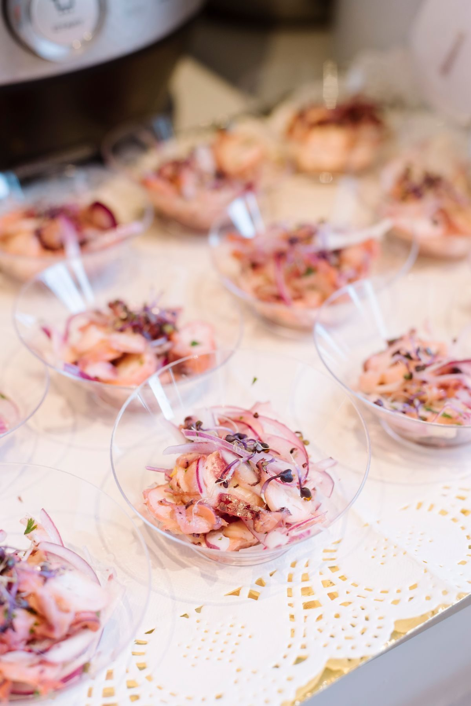

From the truck menu, in photos


El Mero Mero serves Mexico City-style fare from a food truck, with takeout and outdoor seating. Dinner is at 3000 Carlisle Blvd NE, and lunch is at 2101 Eubank Blvd in Albuquerque.

Dinner: 3000 Carlisle Blvd NE, Albuquerque, NM 87110; Lunch: 2101 Eubank Blvd, Albuquerque, NM
Tue 9:00 AM to 3:00 PM; Wed to Fri 9:00 AM to 2:00 PM and 6:00 to 11:00 PM; Sat 6:00 to 11:00 PM